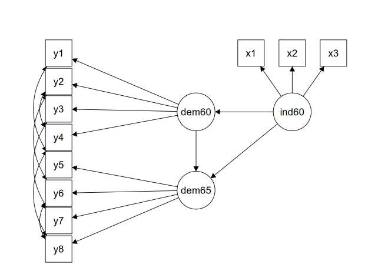

library("lavaan")
library("lavaanPlot")Descrição
Este material aborda os Modelos de Equações Estruturais (MEE) ou Structural Equation Model (SEM)
Plano de aula
Introdução
O que é o SEM?
A Modelagem de Equações Estruturais (SEM) é uma metodologia para testar e estimar relações causais entre múltiplas variáveis.
Observação Importante
O SEM pode ser entendido como uma combinação de 2 técnicas e trabalha essencialmente com 2 tipos de variáveis
- Das técnicas: O SEM pode ser visto como uma combinação da:
Análise fatorial, que busca mesurar variáveis latentes por meio de variáveis observadas;
Análise de regressão, que analisa as inter-relações das variáveis.
Sobre a Análise Fatorial
A análise fatorial pode ser dividida em dois tipos principais: exploratória e confirmatória.
A Análise Fatorial Exploratória é utilizada quando o pesquisador não possui uma teoria pré-existente forte ou uma hipótese clara sobre a estrutura subjacente de um conjunto de variáveis. O objetivo da AFE é identificar e entender os traços latentes (também chamados de fatores ou construtos) que podem explicar as correlações observadas entre um grande número de variáveis manifestas (itens de um questionário, por exemplo)
A análise fatorial confirmatória empresta muitos dos mesmos conceitos da análise fatorial exploratória, exceto que, em vez de deixar os dados nos dizerem a estrutura fatorial, nós pré-determinamos a estrutura fatorial. É geralmente baseada em pesquisas anteriores, teorias estabelecidas ou no próprio resultado de uma AFE prévia.
A análise fatorial confirmatória - ou confirmatory factor analysis (CFA) - faz parte frequentemente da abordagem abrangente do SEM
Um modelo SEM é geralmente representado por um diagrama que mostra as relações hipotéticas entre: Variáveis Latentes e Variáveis Observadas
Variáveis Latentes: Conceitos abstratos que não podem ser medidos diretamente (ex: bem-estar, inteligência, burnout).
Variáveis Observadas (ou Indicadores): Dados que podem ser medidos diretamente e que servem como indicadores das variáveis latentes (ex: respostas a perguntas de um questionário).
Por que utilizar o SEM?
Visão Holística do Modelo Use a SEM para testar um sistema completo de relações de uma só vez. Em vez de analisar cada hipótese separadamente (o que aumenta o risco de erro), a SEM avalia se o seu modelo teórico como um todo é compatível com os dados, oferecendo uma visão global e integrada do fenômeno.
Medição Precisa de Conceitos Abstratos A SEM é ideal para medir conceitos abstratos (variáveis latentes) como “satisfação” ou “ansiedade”. Ela faz isso usando múltiplos indicadores (perguntas de um questionário) e, crucialmente, separa a medição do conceito do seu erro de medição. Isso resulta em estimativas muito mais confiáveis das relações entre as variáveis.
Quando usar o SEM?
A Modelagem de Equações Estruturais é uma ferramenta estatística confirmatória, não exploratória. Ela pode ser aplicada de três maneiras distintas:
I. Confirmação Direta: Testar um único modelo teórico para validá-lo ou invalidá-lo.
- Modelos Alternativos: Comparar modelos concorrentes para ver qual explica melhor os dados.
- Desenvolvimento do Modelo: Iniciar com um modelo teórico e, caso ele não se ajuste bem, modificá-lo em busca de uma versão melhor e mais simples (parcimoniosa).
Vantagem do SEM
Os Modelos de Equações Estruturais englobam uma ampla gama de abordagens:
- Regressão linear e multivariada
- Análise de trajetória (path analysis)
- Análise fatorial confirmatória (CFA)
- Regressão estrutural (relacionar variáveis latentes)
Essa capacidade de integração é o que torna a SEM tão poderosa, permitindo:
Medir e quantificar relações entre conceitos abstratos e dados concretos
Transformar relações complexas em diagramas visuais compreensíveis
Computar efeitos diretos e indiretos de uma variável sobre a outra
Breve histórico do SEM
Um dos principais autores (talvez o principal) do SEM foi Karl Joreskög (Seus artigos seminais datam da década de 1970)
Propôs a metodologia CFA via máxima verossimilhança e análise da matriz de variância-covariancia
Colaborou para o desenvolvimento do diagrama de caminho
Ele foi um dos responsáveis pelo desenvolvimento do software LISREL para modelagem de equações estruturais no início da década de 1970
Charles Spearman e Sewall Wright são creditados com os primeiros modelos (análise fatorial e análise de caminho) que influenciaram diretamente o desenvolvimento do SEM
Yves Rosseel desenvolveu o pacote lavaan de código aberto para o R
Atualmente, Judea Pearl é um grande defensor da interpretação causal dos parametros estimados via SEM
- A abordagem de resultados potenciais é amplamente reconhecida como a principal abordagem para inferência causal nas Ciências Econômicas.
Conceitos e a Caixa de Ferramentas
Para trabalhar com SEM, é essencial compreender seus componentes e a terminologia específica.
Este quadro-resumo apresenta os principais termos utilizados em Modelagem de Equações Estruturais (SEM) de forma concisa e visual.
| Termo | Definição | Exemplo |
|---|---|---|
| Variável Observada | Variável que existe no banco de dados, diretamente medida ou coletada. Também chamada de item ou variável manifesta. | Resposta a “Qual sua nota em matemática?” ou “De 1 a 5, quão satisfeito você está?”. |
| Variável Latente | Conceito abstrato não medido diretamente, inferido a partir de variáveis observadas. | “Inteligência”, “Ansiedade”, “Satisfação no Trabalho”. |
| Variável Exógena | Variável independente no modelo, funciona como “causa” e não é explicada por outras variáveis no modelo. | Ponto de partida de uma seta causal. |
| Variável Endógena | Variável dependente no modelo, funciona como “efeito” e é explicada por outras variáveis no modelo. | Destino de uma seta causal. |
| Modelo de Mensuração | Parte do SEM que conecta variáveis observadas a variáveis latentes, definindo como os conceitos abstratos são medidos. | Especificar que Q1, Q2 e Q3 são indicadores de “Ansiedade”. |
| Indicador | Variável observada usada para medir uma variável latente em um modelo de mensuração. | “Nota em geometria” como medida de “habilidade matemática”. |
| Fator | Outro nome para variável latente, definida por seus indicadores. | “Inteligência” como fator medido por testes de QI. |
| Carga Fatorial | Caminho que liga um indicador ao seu fator, representando a força dessa relação. | Uma carga fatorial alta indica que o item é um bom medidor do conceito. |
| Modelo Estrutural | Parte do SEM que especifica relações de causa e efeito entre variáveis (latentes ou observadas). | Definir “Ansiedade → Desempenho Acadêmico”. |
Variáveis Observadas vs. Variáveis Latentes
No SEM, distinguimos entre dois tipos principais de variáveis: Variáveis Observadas: São variáveis que existem diretamente nos dados e podem ser medidas sem erro.
Variáveis Latentes: São variáveis construídas que não existem diretamente nos dados; são hipóteses teóricas. Elas são mensuradas indiretamente através de suas variáveis observadas (indicadores) por meio de análise fatorial confirmatória
Além disso, as variáveis podem ser classificadas como:
Variável Exógena: Uma variável independente que explica uma variável endógena. Pode ser observada (representada por ‘x’) ou latente (representada por ‘\(\xi\)’).
Variável Endógena: Uma variável dependente que é explicada por outras variáveis no modelo. Pode ser observada (representada por ‘y’) ou latente (representada por ‘\(\eta\)’). Em modelos de análise de trajetória, uma variável endógena pode predizer outra variável endógena.
Diagramas de Caminho ou Diagramas de Trajetória
Os diagramas de trajetória são representações visuais essenciais dos modelos SEM, facilitando a compreensão das relações complexas que podem ser difíceis de visualizar apenas com equações matriciais.

Os símbolos utilizados nos diagramas são padronizados:
- Círculos: Representam variáveis latentes (fatores ou construtos).
- Quadrados: Representam variáveis observadas (indicadores ou itens).
- Triângulos: Representam interceptos ou médias (geralmente não explicitados por padrão no
lavaana menos que solicitados). - Setas únicas (de uma via): Indicam caminhos de regressão ou relações causais diretas (ex: uma variável predizendo outra).
- Setas duplas (de duas vias): Indicam variâncias (se a seta aponta para a própria variável, formando um loop) ou covariâncias (se a seta conecta duas variáveis).
Modelo de Mensuração e Modelo Estrutural
O SEM é singular por abranger tanto modelos de medida ou de mensuração quanto modelos estruturais:
- Modelo de Mensuração: É a parte do SEM que liga variáveis observadas a variáveis latentes. Sua função é mensurar construtos latentes a partir de variáveis observadas. Envolve a Análise Fatorial Confirmatória (AFC).
- Neste modelo, as variáveis observadas que medem um fator são chamadas de indicadores.
- Um fator (variável latente) é definido por seus indicadores. A relação entre um indicador e um fator é chamada de carga fatorial (loading).
- Modelo Estrutural: A parte do SEM que especifica as relações causais entre variáveis, sejam elas observadas ou latentes. Pode envolver relações de variáveis exógenas para endógenas, e até mesmo de variáveis endógenas para outras variáveis endógenas.
- O tipo mais abrangente de modelo estrutural, a regressão estrutural, lida com as relações entre variáveis latentes.
Estimação, Identificação e Teste de Modelos (Goodness-of-Fit)
Para entender os conceitos de estimação, identificação e teste de ajuste de modelos tomaremos como exemplo um modelo de mensuração.
O modelo de mensuração
O modelo de mensuração ou modelo de análise fatorial é essencialmente um modelo de regressão linear onde o preditor principal, o fator, é latente ou não observado. Para um único item, o modelo de análise fatorial é:
\[y_1 = \tau_1 + \lambda_1\eta + \epsilon_1\]
onde \(\tau_1\) é o intercepto do primeiro item e \(\lambda_1\) é a carga ou peso de regressão do primeiro fator sobre o primeiro item, e \(\epsilon_1\) é o resíduo para o primeiro item. Existem duas diferenças principais entre o modelo de análise fatorial e a regressão linear:
- A primeira e mais importante é que o preditor ou fator, \(\eta\) (“eta”), não é observado, enquanto em uma regressão linear os preditores são observados.
- A análise fatorial tende a ser um modelo multivariado: vários itens (resultados) por indivíduo)
Podemos representar um modelo mensuração (com 3 itens) como uma equação matricial:
\[\begin{pmatrix} y_1 \\ y_2 \\ y_3 \end{pmatrix} = \begin{pmatrix} \tau_1 \\ \tau_2 \\ \tau_3 \end{pmatrix} + \begin{pmatrix} \lambda_1 \\ \lambda_2 \\ \lambda_3 \end{pmatrix} (\eta_1) + \begin{pmatrix} \epsilon_1 \\ \epsilon_2 \\ \epsilon_3 \end{pmatrix}\]
Vamos definir cada um dos termos no modelo:
- \(\tau\) (“tau”) os interceptos ou médias dos itens
- \(\lambda\) (“lambda”) as cargas, que podem ser interpretadas como a correlação do item com o fator
- \(\eta\) (“eta”), o preditor latente dos itens, ou seja, o fator
- \(\epsilon\) (“epsilon”) os resíduos do modelo fatorial, o que sobra depois de considerar o fator ou o que explica o item além do fator
O índice refere-se ao número do item. Assim, por exemplo, \(\tau_1\) significa o intercepto do primeiro item, \(\lambda_2\) é a carga do segundo item com o fator e \(\epsilon_3\) é o resíduo do terceiro item, após considerar o fator.
A Matriz de Covariância Implícita no Modelo
Historicamente, a análise fatorial é usada para responder à pergunta: quanta variância comum é compartilhada entre os itens? Esta matriz de variância-covariância pode ser descrita usando a matriz de covariância implícita no modelo \(\Sigma(\theta_{y})\). Note que isso contrasta com a matriz de covariância populacional observada \(\Sigma\), que vem apenas dos dados. A fórmula para a matriz de covariância implícita no modelo é:
\[\Sigma(\theta_{y}) = \Lambda\Psi\Lambda' + \Theta_\epsilon\]
A seguir, a descrição de cada parâmetro, definido como um termo no modelo a ser estimado:
- \(\Lambda\) (“lambda”) matriz de cargas fatoriais (consistindo dos mesmos \(\lambda\)’s do modelo de mensuração)
- \(\Psi\) (“psi”) matriz de variância-covariância dos fatores latentes (ou seja, variância de \(\eta\); para um fator, é um escalar)
- \(\Theta_\epsilon\) (“theta-epsilon”) matriz de variância-covariância dos resíduos
As dimensões desta matriz correspondem às mesmas da matriz de covariância observada \(\Sigma\); para três itens, é 3x3. Lembre-se que a matriz de covariância do modelo pode ser definida pelo seguinte:
No caso de três itens e um fator:
\[\Sigma(\theta_y) = \begin{pmatrix} \lambda_1 \\ \lambda_2 \\ \lambda_3 \end{pmatrix} (\psi_{11}) \begin{pmatrix} \lambda_1 & \lambda_2 & \lambda_3 \end{pmatrix} + \begin{pmatrix} \theta_{11} & \theta_{12} & \theta_{13} \\ \theta_{21} & \theta_{22} & \theta_{23} \\ \theta_{31} & \theta_{32} & \theta_{33} \end{pmatrix}\]
Note que as cargas \(\lambda\) são os mesmos parâmetros compartilhados entre o modelo de mensuração e a matriz de covariância implícita. Isso significa que os únicos novos parâmetros envolvem \(\Psi\) e \(\Theta_\epsilon\), que são as matrizes de covariância dos fatores latentes e dos erros residuais, respectivamente.
Usualmente negligenciamos os interceptos (\(\tau\)'s) do modelo estrutural (raramente possui uma interpretação útil). Para isso, o pesquisador padroniza os itens (subtrai a média e divide pelo desvio-padrão).
Valores Conhecidos, Parâmetros, Graus de Liberdade e Identificação
O conceito de parâmetro fixo ou livre é essencial na CFA (Análise Fatorial Confirmatória). O número total de parâmetros em um modelo CFA é determinado pelo número de valores conhecidos em sua matriz de variância-covariância populacional \(\Sigma\), dada pela fórmula \(p(p+1)/2\), onde \(p\) é o número de itens em sua pesquisa. Para obter a matriz de covariância amostral \(S = \hat{\Sigma}\), que é uma estimativa da matriz de covariância populacional \(\Sigma\), use o comando cov no R.
As células fora da diagonal em \(S\) correspondem às covariâncias amostrais entre dois pares de itens; e as células diagonais em \(S\) correspondem à variância amostral de cada item.
Como as covariâncias são duplicadas, o número de parâmetros livres na CFA é determinado pelo número de variâncias e covariâncias únicas. Com três itens, o número de valores conhecidos é \(3(4)/2 = 6\).
Os valores conhecidos servem como a restrição principal em termos de quantos parâmetros totais podemos estimar. Para simplificar, vamos assumir que o número total de parâmetros vem apenas da matriz de covariância implícita no modelo. Dado que temos 6 valores conhecidos, quantos parâmetros totais (únicos) temos da matriz de covariância implícita no modelo (com 3 itens e 1 fator latente)?
\[\Sigma(\theta) = \begin{pmatrix} \lambda_1 \\ \lambda_2 \\ \lambda_3 \end{pmatrix} (\psi_{11}) \begin{pmatrix} \lambda_1 & \lambda_2 & \lambda_3 \end{pmatrix} + \begin{pmatrix} \theta_{11} & \theta_{12} & \theta_{13} \\ \theta_{21} & \theta_{22} & \theta_{23} \\ \theta_{31} & \theta_{32} & \theta_{33} \end{pmatrix}\]
Se fôssemos estimar cada parâmetro na matriz de covariância implícita no modelo, haveria 3 \(\lambda\)'s, 1 \(\psi\), e 6 \(\theta\)'s, o que nos dá um total de 10 parâmetros, mas temos apenas 6 valores conhecidos! A solução é permitir parâmetros fixos, que são parâmetros pré-determinados.
N\(^{o}\) de parâmetros livres = N\(^{o}\) de parâmetros de interesse - N\(^{o}\) de parâmetros fixos.
df = N\(^{o}\) de valores conhecidos - N\(^{o}\) de parâmetros livres
Os modelos são justamente identificados ou saturados com zero graus de liberdade. Isso significa que o número de parâmetros livres ocupa todos os valores conhecidos em \(\Sigma\). Isso é comumente visto em modelos de regressão linear, e a principal desvantagem é que não podemos avaliar o ajuste do modelo porque ele supostamente é o melhor que podemos fazer.
Um modelo subidentificado significa que o número de valores conhecidos é menor que o número de parâmetros livres, o que é indesejável.
Em modelos superidentificados, o número de valores conhecidos é maior que o número de parâmetros livres. Modelos superidentificados nos permitem avaliar o ajuste do modelo (a ser discutido posteriormente). Para resumir:
df negativo, valores conhecidos < parâmetros livres
df = 0, valores conhecidos = parâmetros livres
df positivo, valores conhecidos > parâmetros livres
Usualmente existem 2 formas de garantir a identificação do modelo:
- Método do Marcador: Fixa a primeira carga fatorial de cada fator em 1. Este é o método padrão no
lavaan.
- Método do Marcador: Fixa a primeira carga fatorial de cada fator em 1. Este é o método padrão no
- Método de Padronização da Variância : Fixa a variância de cada fator em 1, mas estima livremente todas as cargas fatoriais.
Observação Importante
Se for do interesse do pesquisador encontrar os valores dos interceptos ele terá problema de identificação?
Resposta: Não. Apesar dos parâmetros de interesse aumentarem, o número de valores conhecidos também irá aumentar, pois a matriz de variância-covariância amostral deverá incorporar os vetores de 1's dos interceptos
Estimação
No SEM, os modelos são tipicamente estimados utilizando o método de Máxima Verossimilhança (ML). A ML busca os parâmetros que tornam a amostra observada mais provável, ou seja, maximiza a função de verossimilhança para determinar os parâmetros que têm maior probabilidade de produzir os dados observados.
É importante notar que, embora os coeficientes de regressão de uma estimação por Mínimos Quadrados Ordinários (MQO) sejam equivalentes aos da Máxima Verossimilhança, as estimativas das variâncias do modelo diferem entre os 2 estimadores.
O componente mais essencial de um modelo de equações estruturais é a matriz de covariância. O objetivo do SEM é reproduzir a matriz de covariância da população (\(\Sigma\)), usando os parâmetros que o modelo hipotetiza (\(\Sigma(\theta)\)), pela matriz de covariância implicita do modelo. Se o modelo se ajusta perfeitamente, então \(\Sigma = \Sigma(\theta)\).
Na prática, a função máxima verossimilhança busca os valores dos parâmetros de interesse que maximizam a probabilidade de que a matriz de covariância amostral (\(\Sigma\)) coincida com a matriz de covariância implícita do modelo (\(\Sigma(\theta)\)).
Estatísticas de Qualidade do Ajuste (Model Fit Statistics)
As estatísticas de qualidade do ajuste avaliam o quão bem o modelo populacional se ajusta aos dados observados. A hipótese nula no SEM é que a matriz de covariância implicada pelo modelo (\(\Sigma(\theta)\)) é igual à matriz de covariância da população (\(\Sigma\)) (\(H_0: \Sigma(\theta)=\Sigma\)). Rejeitar esta hipótese é geralmente indesejável no SEM, pois significaria que o modelo proposto não se ajusta bem aos dados.
Covariância Residual: A diferença entre a matriz de covariância amostral (\(S\)) e a matriz de covariância implicada pelo modelo (\(\Sigma(\hat{\theta})\)), ou seja, \(S - \Sigma(\hat{\theta})\). Valores próximos de zero indicam um bom ajuste.
Teste Qui-quadrado do Modelo (\(\chi^2\)): É a estatística de teste principal que mede a discrepância entre a matriz de covariância observada e a matriz de covariância implicada pelo modelo.
- Um valor de qui-quadrado maior indica uma maior diferença (pior ajuste) entre as matrizes e, consequentemente, uma maior probabilidade de rejeitar a hipótese nula .
Por ser um teste sensível ao tamanho da amostra é comum a utilização de outros testes incrementais (comparativos):
- CFI (Comparative Fit Index)
- TLI (Tucker Lewis Index)
Aplicações do SEM na Economia
O SEM, com sua capacidade de modelar relações complexas e variáveis latentes, tem diversas aplicações.
Exemplos de Aplicações
Dois exemplos clássicos de aplicação são:
Modelo de Realização de Status Socioeconômico: Um modelo da teoria da estratificação social que investiga como a origem socioeconômica (variáveis como escolaridade dos pais e status socioeconômico da ocupação do pai) influencia o destino socioeconômico (medido por variáveis como escolaridade do próprio indivíduo, status socioeconômico da ocupação e rendimento do trabalho). Este modelo é relevante para entender a transmissão intergeracional da desigualdade, muitas vezes revelando que os efeitos indiretos são mais proeminentes que os diretos .
Modelo de Determinação do Índice de Gestão Descentralizada Municipal (IGD-M): Aplicado na área de políticas sociais, este modelo busca explicar os fatores que determinam a qualidade da gestão de programas sociais em nível municipal. Pode incluir variáveis como renda per capita, PIB per capita e a proporção de beneficiários de programas sociais, revelando a dependência municipal de recursos externos e a complexa relação entre desenvolvimento econômico e qualidade da gestão social.
Hands-on: Aplicação do SEM em Software Estatístico e Interpretação
A aplicação prática do SEM é comumente realizada em softwares estatísticos. O pacote lavaan no R é amplamente utilizado por ser gratuito, de código aberto e relativamente fácil de usar. O STATA também emprega a abordagem por meio do comando sem.
A sintaxe no lavaan é intuitiva:
~: Usado para previsão (regressão), onde o resultado observado é previsto por preditores observados (e.g., y ~ x).
=~: Usado para indicadores em modelos de mensuração, ligando uma variável latente aos seus indicadores observados (e.g., f =~ q + r + s).
~~: Usado para covariância (e.g., x ~~ x para variância, x ~~ y para covariância).
~1: Usado para estimar o intercepto ou média de uma variável (e.g., x ~ 1).
1*: fixa o parâmetro ou carga fatorial em 1 (e.g., f =~ 1*q)
NA*: deixa o parâmetro ou carga fatorial livre (subscreve o método padrão marker method, (e.g., f =~ NA*q)
a*: fixa um valor a para o parâmetro (e.g., f =~ a*q)
A Base de dados: Industriaçização e Economia Política
Esta base de dados, que está contida no pacote lavaan, é utilizada ao longo do livro de Bollen de 1989 (Structural equations with latent variables). A base de dados contém várias medidas de democracia política e industrialização em países em desenvolvimento. As variáveis podem ser descritas por:
y1: Avaliações de especialistas sobre a liberdade de imprensa em 1960 (em escala:0 a 10)
y2: A liberdade de oposição política em 1960 (em escala:0 a 10)
y3: A imparcialidade das eleições em 1960 (em escala:0 a 10)
y4: A eficácia da legislatura eleita em 1960 (em escala:0 a 10)
Variáveis de Democracia Política (1965)
y5: Avaliações de especialistas sobre a liberdade de imprensa em 1965 (em escala:0 a 10)
y6: A liberdade de oposição política em 1965 (em escala:0 a 10)
y7: A imparcialidade das eleições em 1965 (em escala:0 a 10)
y8: A eficácia da legislatura eleita em 1965 (em escala:0 a 10)
Variáveis de Industrialização (1960)
x1: O produto nacional bruto (PNB) per capita em 1960
x2: O consumo de energia per capita em 1960
x3: A porcentagem da força de trabalho na indústria em 1960
Regressão linear:
Imagine que queremos estimar a relação entre: liberdade de imprensa e industrialização. A seguinte regressão foi proposta:
\[ y_1 = \alpha_1 + \gamma_1 x_1 + \gamma_2 x_2 + \gamma_3 x_3 + \zeta_1 \]
data("PoliticalDemocracy")
m1 <- 'y1 ~ 1 + x1 + x2 + x3'
fit1 <- sem(m1, data=PoliticalDemocracy)Os resultados obtidos são:
summary(fit1)lavaan 0.6-19 ended normally after 1 iteration
Estimator ML
Optimization method NLMINB
Number of model parameters 5
Number of observations 75
Model Test User Model:
Test statistic 0.000
Degrees of freedom 0
Parameter Estimates:
Standard errors Standard
Information Expected
Information saturated (h1) model Structured
Regressions:
Estimate Std.Err z-value P(>|z|)
y1 ~
x1 1.807 0.861 2.098 0.036
x2 0.017 0.477 0.036 0.971
x3 -0.307 0.382 -0.805 0.421
Intercepts:
Estimate Std.Err z-value P(>|z|)
.y1 -2.655 2.739 -0.970 0.332
Variances:
Estimate Std.Err z-value P(>|z|)
.y1 5.733 0.936 6.124 0.000Se quisermos visualizar o diagrama de caminho podemos usar o comando lavaanPlot
lavaanPlot(model = fit1,
node_options = list(shape = "box", fontname = "Helvetica"),
edge_options = list(color = "grey"),
coefs = TRUE)Perceba que os valores do coeficientes estimados serão os mesmo que quando usamos o lm. As estimativas dos erros-padrão dos coeficientes são diferentes, pois o comando sem utiliza outro estimador da variância do erro do modelo. Lembre-se que o estimador da variância dos parâmetros é uma função do estimador da variância do modelo
fit1lm <- lm(y1 ~ x1 + x2 + x3, data=PoliticalDemocracy)
summary(fit1lm)
Call:
lm(formula = y1 ~ x1 + x2 + x3, data = PoliticalDemocracy)
Residuals:
Min 1Q Median 3Q Max
-5.1788 -1.5385 0.1764 1.7060 4.7523
Coefficients:
Estimate Std. Error t value Pr(>|t|)
(Intercept) -2.65549 2.81464 -0.943 0.3486
x1 1.80655 0.88496 2.041 0.0449 *
x2 0.01713 0.49059 0.035 0.9722
x3 -0.30720 0.39219 -0.783 0.4361
---
Signif. codes: 0 '***' 0.001 '**' 0.01 '*' 0.05 '.' 0.1 ' ' 1
Residual standard error: 2.461 on 71 degrees of freedom
Multiple R-squared: 0.1553, Adjusted R-squared: 0.1197
F-statistic: 4.353 on 3 and 71 DF, p-value: 0.00715
Atividade
Como você interpretaria as estimativas dos parâmetros obtidos via comando
semdolavaan: de maneira diferente ou idêntica a um MQO?No caso da estimação via
semde uma única equação de regressão linear como está, existe a possibilidade do modelo não ser saturado ?
Regressão Multivariada
Nessa seção vamos mostrar como rodar um modelo multivariado (2 variáveis endógenas). Por exemplo:
\[ \begin{pmatrix} y_1 \\ y_2 \end{pmatrix} = \begin{pmatrix} \alpha_1 \\ \alpha_2 \end{pmatrix} + \begin{pmatrix} \beta_{11} & \beta_{12} & \beta_{13} \\ \beta_{21} & \beta_{22} & 0 \end{pmatrix} \begin{pmatrix} x_1 \\ x_2 \\ x_3 \end{pmatrix} + \begin{pmatrix} \epsilon_1 \\ \epsilon_2 \end{pmatrix} \]
m2 <- '
y1 ~ 1 + x1 + x2 + x3
y2 ~ 1 + x1 + x2
x1~~x3
x1~~x2
x2~~x3
'
fit2 <- sem(m2, data=PoliticalDemocracy)Os resultados obtidos são:
summary(fit2)lavaan 0.6-19 ended normally after 68 iterations
Estimator ML
Optimization method NLMINB
Number of model parameters 19
Number of observations 75
Model Test User Model:
Test statistic 0.000
Degrees of freedom 1
P-value (Chi-square) 1.000
Parameter Estimates:
Standard errors Standard
Information Expected
Information saturated (h1) model Structured
Regressions:
Estimate Std.Err z-value P(>|z|)
y1 ~
x1 1.806 0.857 2.108 0.035
x2 0.017 0.455 0.037 0.970
x3 -0.307 0.307 -1.000 0.317
y2 ~
x1 -0.258 1.346 -0.191 0.848
x2 0.765 0.653 1.172 0.241
Covariances:
Estimate Std.Err z-value P(>|z|)
x1 ~~
x3 0.812 0.150 5.407 0.000
x2 0.977 0.169 5.774 0.000
x2 ~~
x3 1.782 0.318 5.611 0.000
.y1 ~~
.y2 5.393 1.220 4.420 0.000
Intercepts:
Estimate Std.Err z-value P(>|z|)
.y1 -2.655 2.722 -0.976 0.329
.y2 1.892 4.265 0.443 0.657
x1 5.054 0.084 60.127 0.000
x2 4.792 0.173 27.657 0.000
x3 3.558 0.161 22.066 0.000
Variances:
Estimate Std.Err z-value P(>|z|)
.y1 5.733 0.936 6.124 0.000
.y2 14.404 2.352 6.124 0.000
x1 0.530 0.087 6.124 0.000
x2 2.252 0.368 6.124 0.000
x3 1.950 0.318 6.124 0.000Por padrão (default) o comando sem admite covariação entre as variáveis endógenas, mas podemos forçar uma covariância nula:
m2_1 <- '
y1 ~ 1 + x1 + x2 + x3
y2 ~ 1 + x1 + x2
x1~~x3
x1~~x2
x2~~x3
y1 ~~ 0*y2
'
fit2_1 <- sem(m2_1, data=PoliticalDemocracy)Os resultados obtidos são:
summary(fit2_1)lavaan 0.6-19 ended normally after 32 iterations
Estimator ML
Optimization method NLMINB
Number of model parameters 18
Number of observations 75
Model Test User Model:
Test statistic 32.570
Degrees of freedom 2
P-value (Chi-square) 0.000
Parameter Estimates:
Standard errors Standard
Information Expected
Information saturated (h1) model Structured
Regressions:
Estimate Std.Err z-value P(>|z|)
y1 ~
x1 1.807 0.861 2.098 0.036
x2 0.017 0.477 0.036 0.971
x3 -0.307 0.382 -0.805 0.421
y2 ~
x1 -0.258 1.346 -0.191 0.848
x2 0.765 0.653 1.172 0.241
Covariances:
Estimate Std.Err z-value P(>|z|)
x1 ~~
x3 0.812 0.150 5.407 0.000
x2 0.977 0.169 5.774 0.000
x2 ~~
x3 1.782 0.318 5.611 0.000
.y1 ~~
.y2 0.000
Intercepts:
Estimate Std.Err z-value P(>|z|)
.y1 -2.655 2.739 -0.970 0.332
.y2 1.892 4.265 0.443 0.657
x1 5.054 0.084 60.127 0.000
x2 4.792 0.173 27.657 0.000
x3 3.558 0.161 22.066 0.000
Variances:
Estimate Std.Err z-value P(>|z|)
.y1 5.733 0.936 6.124 0.000
.y2 14.404 2.352 6.124 0.000
x1 0.530 0.087 6.124 0.000
x2 2.252 0.368 6.124 0.000
x3 1.950 0.318 6.124 0.000
Atividade
Compare os modelos fit2 com o fit2_1. Explique o que aconteceu com os graus de liberdade?
Proponha uma especificação no
lavaanque torne a regressão multivariada saturada.Proponha uma especificação no
lavaanque gere as mesmas estimativas que 2 regressões independentes porlm.
Modelo de Mensuração
Imagine que a intenção seja, a partir, das variáveis \(x_1\), \(x_2\) e \(x_3\), mensurar um fator latente da industrialização em 1960.
m3 <- '
ind60 =~ x1 + x2 + x3
'
fit3 <- sem(m3, data=PoliticalDemocracy)summary(fit3)lavaan 0.6-19 ended normally after 22 iterations
Estimator ML
Optimization method NLMINB
Number of model parameters 6
Number of observations 75
Model Test User Model:
Test statistic 0.000
Degrees of freedom 0
Parameter Estimates:
Standard errors Standard
Information Expected
Information saturated (h1) model Structured
Latent Variables:
Estimate Std.Err z-value P(>|z|)
ind60 =~
x1 1.000
x2 2.193 0.142 15.403 0.000
x3 1.824 0.153 11.883 0.000
Variances:
Estimate Std.Err z-value P(>|z|)
.x1 0.084 0.020 4.140 0.000
.x2 0.108 0.074 1.455 0.146
.x3 0.468 0.091 5.124 0.000
ind60 0.446 0.087 5.135 0.000Perceba que a interpretação das cargas fatoriais é pouco informativa: a unidade de medida de \(x_2\) e \(x_3\) não é a mesma Por isso é comum a padronização das variáveis para tornar a unidade de medida em desvios-padrão:
summary(fit3, standardized=TRUE)lavaan 0.6-19 ended normally after 22 iterations
Estimator ML
Optimization method NLMINB
Number of model parameters 6
Number of observations 75
Model Test User Model:
Test statistic 0.000
Degrees of freedom 0
Parameter Estimates:
Standard errors Standard
Information Expected
Information saturated (h1) model Structured
Latent Variables:
Estimate Std.Err z-value P(>|z|) Std.lv Std.all
ind60 =~
x1 1.000 0.667 0.917
x2 2.193 0.142 15.403 0.000 1.464 0.976
x3 1.824 0.153 11.883 0.000 1.217 0.872
Variances:
Estimate Std.Err z-value P(>|z|) Std.lv Std.all
.x1 0.084 0.020 4.140 0.000 0.084 0.159
.x2 0.108 0.074 1.455 0.146 0.108 0.048
.x3 0.468 0.091 5.124 0.000 0.468 0.240
ind60 0.446 0.087 5.135 0.000 1.000 1.000Std.lv padroniza apenas o fator latente, deixando as variáveis observadas em suas escalas originais, permitindo interpretar o impacto de 1 desvio padrão no construto sobre os indicadores. Já Std.all padroniza tanto o fator quanto os indicadores, tornando as cargas fatoriais coeficientes de correlação entre -1 e +1, ideal para comparar a força relativa dos indicadores e avaliar sua validade.
Atividade
- Ao invés de utilizar o método do marcador replique o modelo
m3utilizando o método de padronização da variância.
Modelo de Regressão Estrutural
Vamos agora rodar um modelo de regrassão estrutural. Imagine que a teoria nos diga que a industrialização em 1960 seja um preditor do ambiente democrático em 1960 e em 1965. Imagine, também, que o ambiente democrático em 1960 explique o ambiente democrático em 1965.
model <- '
# measurement model
ind60 =~ x1 + x2 + x3
dem60 =~ y1 + y2 + y3 + y4
dem65 =~ y5 + y6 + y7 + y8
# regressions
dem60 ~ ind60
dem65 ~ ind60 + dem60
# residual correlations
y1 ~~ y5
y2 ~~ y4 + y6
y3 ~~ y7
y4 ~~ y8
y6 ~~ y8'
fit <- sem(model, data=PoliticalDemocracy)
summary(fit, standardized=TRUE, fit.measures=TRUE)lavaan 0.6-19 ended normally after 68 iterations
Estimator ML
Optimization method NLMINB
Number of model parameters 31
Number of observations 75
Model Test User Model:
Test statistic 38.125
Degrees of freedom 35
P-value (Chi-square) 0.329
Model Test Baseline Model:
Test statistic 730.654
Degrees of freedom 55
P-value 0.000
User Model versus Baseline Model:
Comparative Fit Index (CFI) 0.995
Tucker-Lewis Index (TLI) 0.993
Loglikelihood and Information Criteria:
Loglikelihood user model (H0) -1547.791
Loglikelihood unrestricted model (H1) -1528.728
Akaike (AIC) 3157.582
Bayesian (BIC) 3229.424
Sample-size adjusted Bayesian (SABIC) 3131.720
Root Mean Square Error of Approximation:
RMSEA 0.035
90 Percent confidence interval - lower 0.000
90 Percent confidence interval - upper 0.092
P-value H_0: RMSEA <= 0.050 0.611
P-value H_0: RMSEA >= 0.080 0.114
Standardized Root Mean Square Residual:
SRMR 0.044
Parameter Estimates:
Standard errors Standard
Information Expected
Information saturated (h1) model Structured
Latent Variables:
Estimate Std.Err z-value P(>|z|) Std.lv Std.all
ind60 =~
x1 1.000 0.670 0.920
x2 2.180 0.139 15.742 0.000 1.460 0.973
x3 1.819 0.152 11.967 0.000 1.218 0.872
dem60 =~
y1 1.000 2.223 0.850
y2 1.257 0.182 6.889 0.000 2.794 0.717
y3 1.058 0.151 6.987 0.000 2.351 0.722
y4 1.265 0.145 8.722 0.000 2.812 0.846
dem65 =~
y5 1.000 2.103 0.808
y6 1.186 0.169 7.024 0.000 2.493 0.746
y7 1.280 0.160 8.002 0.000 2.691 0.824
y8 1.266 0.158 8.007 0.000 2.662 0.828
Regressions:
Estimate Std.Err z-value P(>|z|) Std.lv Std.all
dem60 ~
ind60 1.483 0.399 3.715 0.000 0.447 0.447
dem65 ~
ind60 0.572 0.221 2.586 0.010 0.182 0.182
dem60 0.837 0.098 8.514 0.000 0.885 0.885
Covariances:
Estimate Std.Err z-value P(>|z|) Std.lv Std.all
.y1 ~~
.y5 0.624 0.358 1.741 0.082 0.624 0.296
.y2 ~~
.y4 1.313 0.702 1.871 0.061 1.313 0.273
.y6 2.153 0.734 2.934 0.003 2.153 0.356
.y3 ~~
.y7 0.795 0.608 1.308 0.191 0.795 0.191
.y4 ~~
.y8 0.348 0.442 0.787 0.431 0.348 0.109
.y6 ~~
.y8 1.356 0.568 2.386 0.017 1.356 0.338
Variances:
Estimate Std.Err z-value P(>|z|) Std.lv Std.all
.x1 0.082 0.019 4.184 0.000 0.082 0.154
.x2 0.120 0.070 1.718 0.086 0.120 0.053
.x3 0.467 0.090 5.177 0.000 0.467 0.239
.y1 1.891 0.444 4.256 0.000 1.891 0.277
.y2 7.373 1.374 5.366 0.000 7.373 0.486
.y3 5.067 0.952 5.324 0.000 5.067 0.478
.y4 3.148 0.739 4.261 0.000 3.148 0.285
.y5 2.351 0.480 4.895 0.000 2.351 0.347
.y6 4.954 0.914 5.419 0.000 4.954 0.443
.y7 3.431 0.713 4.814 0.000 3.431 0.322
.y8 3.254 0.695 4.685 0.000 3.254 0.315
ind60 0.448 0.087 5.173 0.000 1.000 1.000
.dem60 3.956 0.921 4.295 0.000 0.800 0.800
.dem65 0.172 0.215 0.803 0.422 0.039 0.039A opção fit.measures=TRUE faz com que o comando reporte estatísticas de testes que analisam o ajuste do modelo.
lavaanPlot(model = fit,
node_options = list(shape = "box", fontname = "Helvetica"),
graph_options = list(rankdir = "LR"),
edge_options = list(color = "grey"),
stars = "regress",
covs = TRUE,
coefs = TRUE)Uma forma de analisar o ajuste do modelo é pelo qui-quadrado. A estatística desse teste é calculada a partir do score da função de máxima verossimilhança
Quanto maior o valor do qui-quadrado, maior a diferença entre as matrizes de covariância observada e implícita do modelo, indicando um pior ajuste.